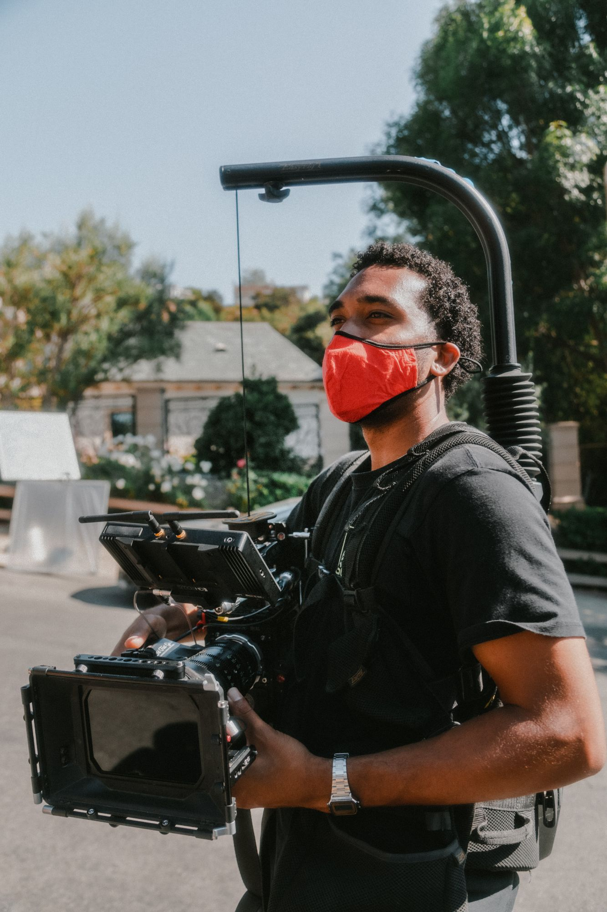

Videography
For cinematic video use the 180 rule. Have your shutter speed be 2x your FPS. Shoot at 24fps for cinematic motion blur and keep your ISO low. Use a Neutral Density (ND) filter to help keep your aperture low and wide open for a shallow depth of field. Shoot in a LOG profile for high dynamic-range.
